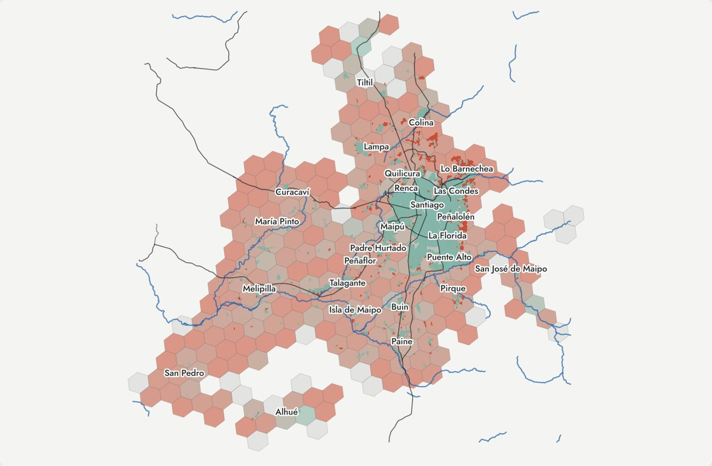

La Reserva Federal define un desierto bancario por distancia en línea recta, 3,2 km en zona urbana y 16,1 km en zona rural. La probé en la Región Metropolitana y el problema casi desaparece. Solo el 0,02 % de la población quedaría en desierto, frente al 5,9 % que vive a más de 15 minutos a pie del punto más cercano.
Esos radios piensan en alguien que maneja. Acá mucha gente camina o anda en micro, y la Caja Vecina del almacén sirve tanto como una sucursal. Por eso medí tiempo a pie por la red de calles, desde cada hexágono poblado hasta el punto de cualquier tipo más cercano.
Las 1.338 personas que marca la definición estadounidense están todas dentro de los desiertos que mide Nadir. Al revés no se cumple.
Fuentes
- Repositorio del caso: protocolo sellado (docs/protocolo.md), enmiendas y código de la comparación.
- Población: INE, Censo de Población y Vivienda 2024. Red de calles: OpenStreetMap, bajo ODbL.